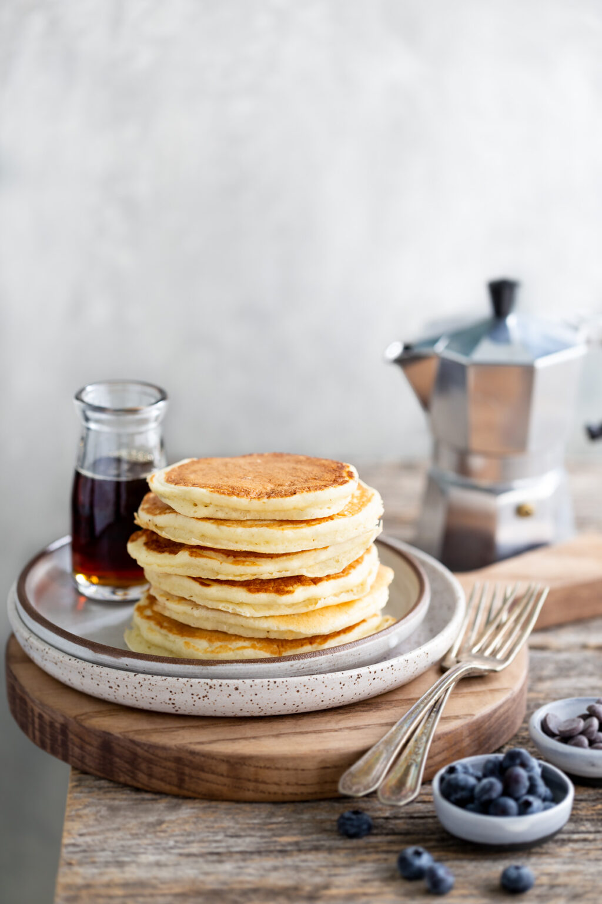
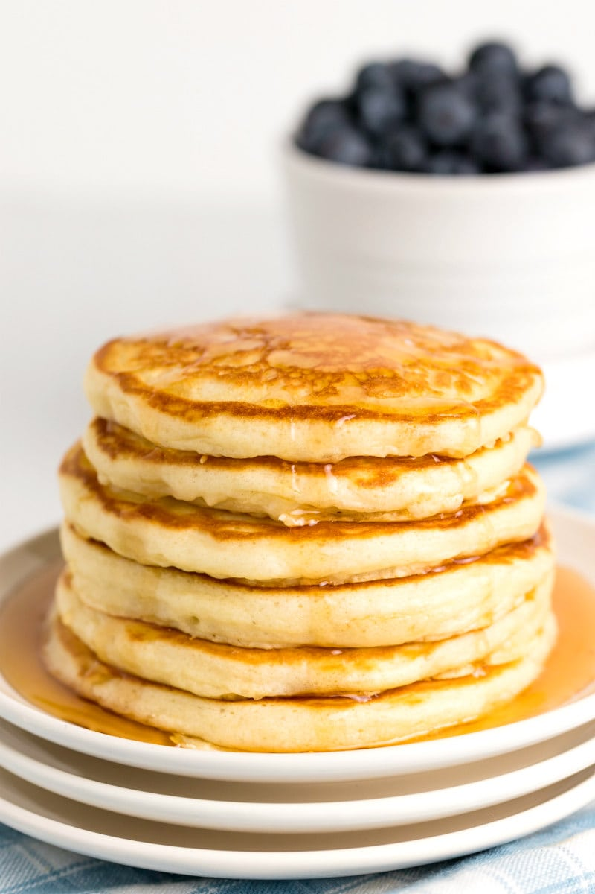

Buttermilk Pancakes
Introduction
Butermilk is the secret to delicious pancakes. When the buttermilk touches the baking soda, it reacts by creating CO2. The thick batter traps the carbon dioxide within itself. Butermilk has a slightly sour taste, creating an edge that would not original be there. Without strong gluten bonds, the pancakes stay tender and soft instead of turning chewy or rubbery, making the pacakes seem to melt in your mouth. All ths makes for fluffier and tastier pancakes. I chose this recipe because it is my favorite breakfeast for right after I wake up. This recipe is my father's. It was inspired by this.


Ingredients
Dry
- 2 cups flour
- 1 tsp baking powder
- ¼ tbsp baking soda
- 2 tbsp granulated sugar
Wet
- 2 tbsp melted butter
- 1 tsp vanilla
- 1 egg
- 3 cups buttermilk
Instructions
- Keep the wet and dry ingredients in seperate bowls
- Mix the ingredients n their repective bowls (keep the batter lumpy. Keeping the bubbles in the batter keeps the pancake fluffy
- Bring the ingredients together into one bowl
- Heat the pan to 350°F
- Place the desired amount of batter in the pan
- Cook until the little bubbles burst and are not being filled with wet batter anymore
- Flip pancake
- Cook until bubbles aren't being filled
- Place onto a plate
- Enjoy